チュートリアル一覧に戻る : Oracle Cloud Infrastructure チュートリアル
必要な時に迅速にリソースを作成して利用することができるのがクラウドのメリットですが、使った分のコストは支払う必要があります。OCIの支払いの方式は、
- 前払い制で事前購入したサブスクリプションから使った分を消費していく方式（Universal Credit Annual Flex） と、
- 後払い制で使った分があとから請求される方式（Pay as you go, PAYG）
の大きく二種類がありますが、いずれの方式にしても、たとえば利用者が増えたりして利用が拡大していくと当初予定していた以上にリソースを使ってコスト消費も増えていく可能性があります。
予期せぬコスト増を避けるためには、テナンシの管理者側で現状のコスト状況を把握し、予算（Budget）機能と、割当て制限（Quota）機能を使って適切にコスト管理をしていきましょう。
予算（Budget）とは、コンパートメントごと、タグごと、テナンシごと（組織管理利用時）に予算金額の設定を行い、設定した金額を超えそうになった場合に管理者にアラートを通知できる機能です。実績値または予測値を用いて、予算金額の何%に達したらメール通知するかを決めることができます。
アラート・メールが通知されたら、管理者側で必要に応じて不要リソースの停止や削除などのコスト低減の対策を行います。
割当て制限（Quota）とは、コンパートメントごとにどのくらいの量のリソースを利用できるかの上限を設定できる機能です。割当て制限が設定されたコンパートメント内で利用者が割当てられた量を超えるリソースを作成しようとするとエラーになります。
本チュートリアルでは、まず「コスト分析」で現状のコストを確認してから、「予算」と「割当て制限」の両方の機能をためしてみます。
所要時間 : 作業時間 約30分。（ただし予算は24時間ごとに評価されるため、設定してから24時間たってから予算アラートのメールが受信できているかを確認します。）
前提条件 :
- チュートリアル入門編（その2）- クラウドに仮想ネットワーク(VCN)を作るを通じてVCNの作成が完了しており、そのVCN内にデフォルトのプライベート・サブネットとパブリック・サブネットが作成されていること
- コンパートメント内になんらかの有償リソースが作成されていて、課金（コスト消費）が発生している状態であること。
注意 : チュートリアル内の画面ショットについては、現在のコンソール画面と異なっている場合があります
目次 :
1. [コスト分析でコストの確認](#anchor1)
2. [予算の設定](#anchor2)
2. [割当て制限の設定](#anchor3)
1. コスト分析でコストの確認
予算を設定する前に、まずは現時点でのコスト分析を使用してコスト状況を確認していきます。
- メニュー
請求とコスト管理→コスト分析をクリックします。 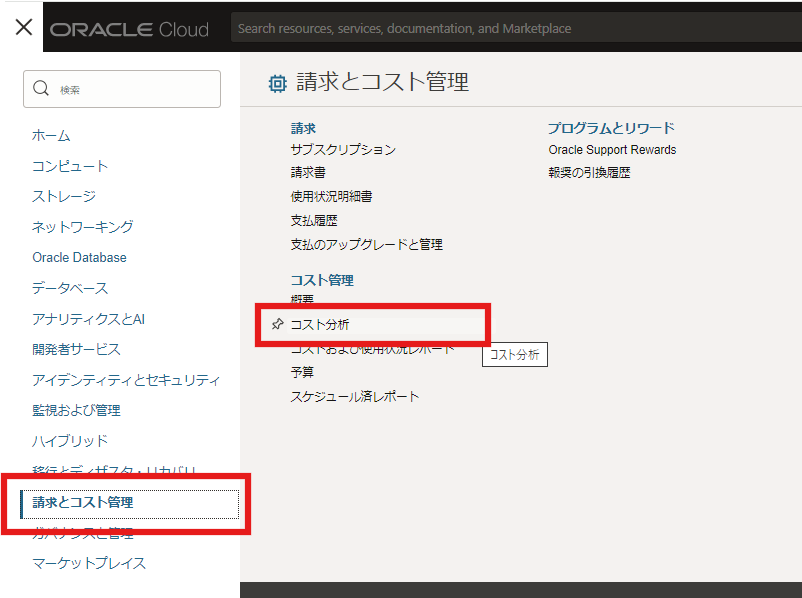 - コスト分析ページの
フィルタでコンパートメントを選択します。 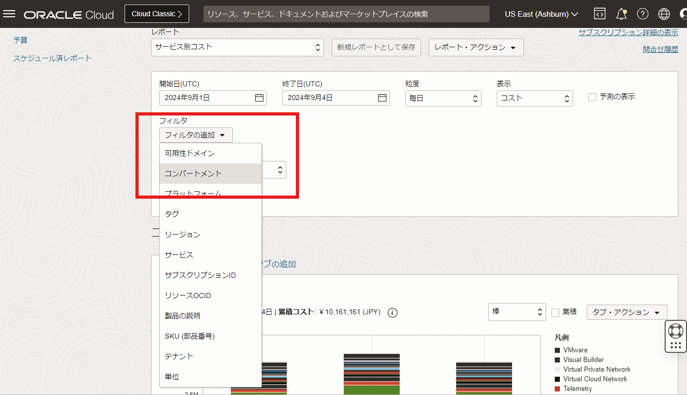 - コンパートメントの選択ウィンドウで対象となる
コンパートメント名を入力して適用をクリックします。
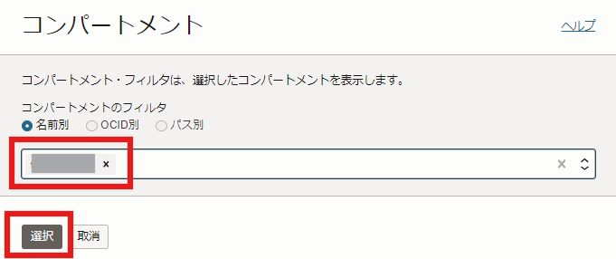
- 開始日と終了日はデフォルトの状態でその月の月初から最新までの期間が選択されていることを確認し、
適用をクリックします。画面下のコスト詳細（JPY）の部分に選択したコンパートメントの金額が表示されます。当月分の累積コストがいくらになっているかを確認します。この画像の場合は1,167円となります。 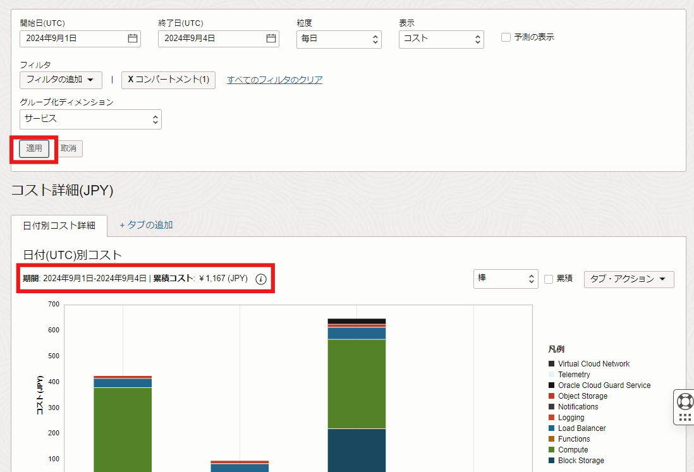
2. 予算の設定
特定のコンパートメントに対しての予算と予算アラート設定して、その閾値に達した際のアラートをとばしてみます。今回は正しくアラート通知が来ることを確認するため、現時点の金額を超える閾値を設定してアラートメールが送信されるかを確認してみます。
-
メニュー
請求とコスト管理→予算をクリックします。 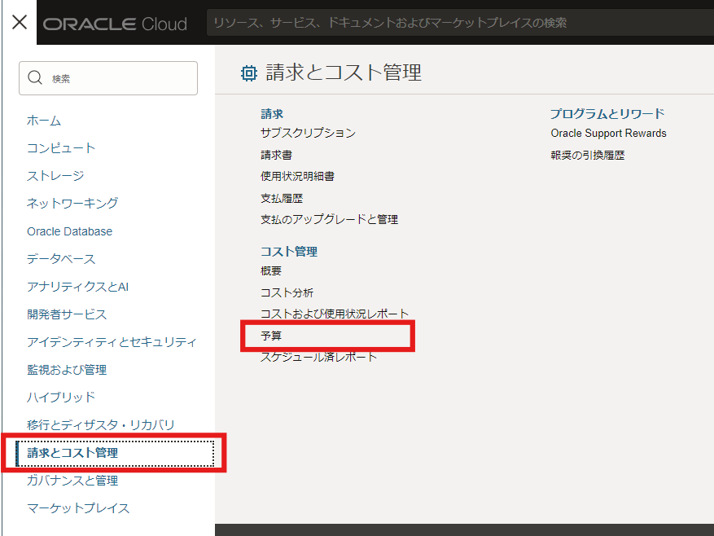 -
予算の作成ボタンをクリックします。 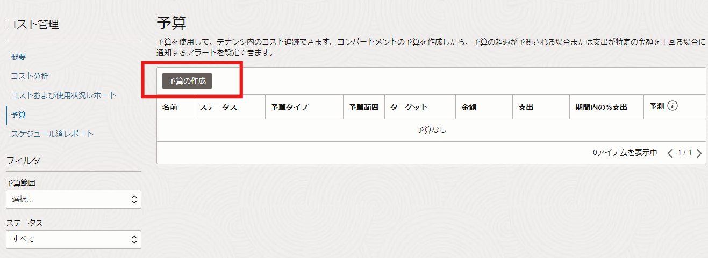 -
予算の作成画面で以下の項目を入力して、
作成ボタンをクリックします。-
名前：任意の名前 -
説明：任意の説明 -
予算範囲：コンパートメント（デフォルト）を選択 -
ターゲット・コンパートメント：対象のコンパートメントを選択 -
スケジュール：毎月 -
予算金額：先ほどコスト分析で確認した累積金額の70%を超える値を入力。ここでは 1500 を入力。 -
予算処理を開始する月の日付：1 （デフォルト）を入力 -
予算アラート・ルール（オプション）-
しきい値メトリック： 実績支出 を選択 -
しきい値のタイプ：予算の比率 を選択 -
しきい値％：70%を入力 -
電子メール受信者：アラートを受信するメールアドレスを入力 -
電子メール・メッセージ：任意。ここでは「これはチュートリアルの予算アラートです。」と入力。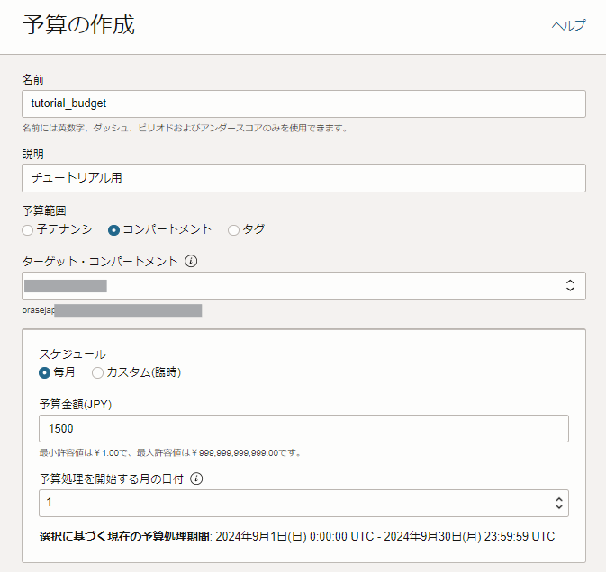 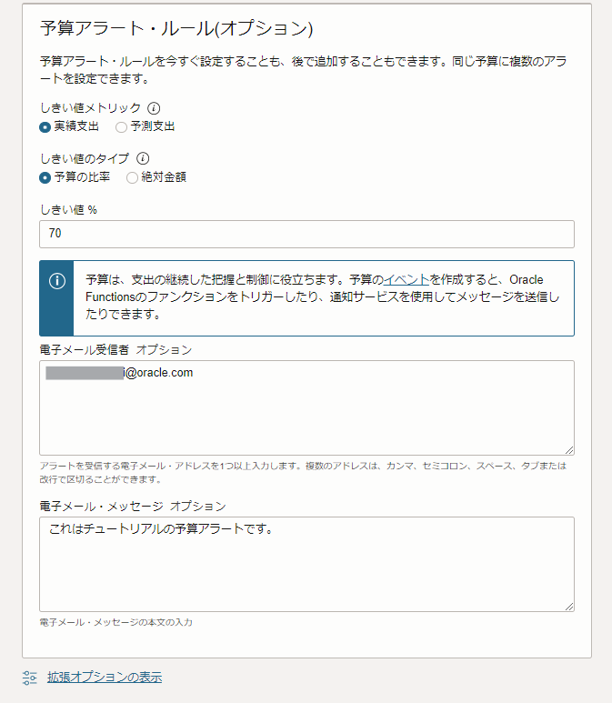
-
-
-
予算が作成できました。まだ予算の評価が行われていないので、支出や期間内の%支出や予測は表示されません。予算アラートは24時間ごとに定期的に評価されるので、このまま1日置いてアラートのメールが送信されるのを待ちます。 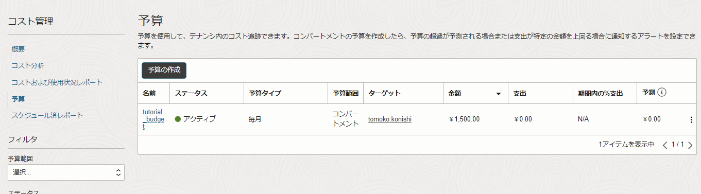
-
24時間以上たってから、指定したメール・アドレスにメールが届いているかを確認します。このようなメールが受信できていれば成功です。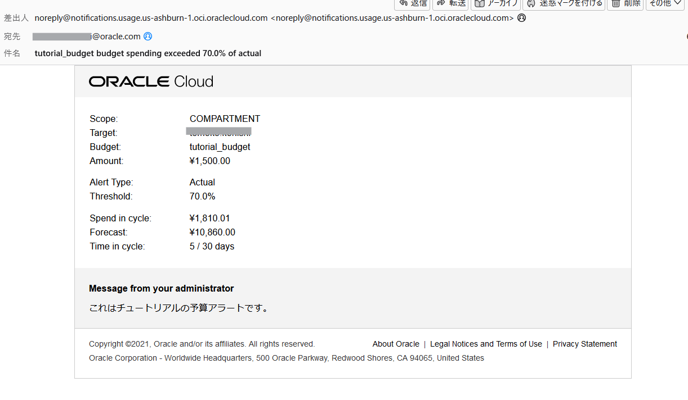
-
コンソールからも予算が評価されていることを確認します。メニュー
請求とコスト管理→予算をクリックします。この例では、予算額を上回る126.09%の支出となっていて予算アラートの通知対象となったことがわかります。 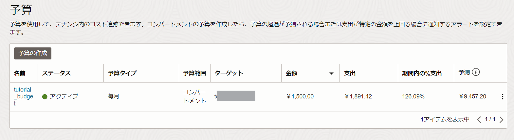
以上で予算の設定と確認は完了です。実際の環境の予算額に応じて適切な設定を行い、必要があれば不要なリソースを削除したり停止して無駄なコスト消費を抑えるようにしましょう。
3. 割当て制限の設定
次に、コンパートメントに対して特定のコンピュート・インスタンスのシェイプに対する割当て制限を作成し、設定した数より多くのリソースをコンパートメント内に作れないことを確認していきます。
-
メニュー
ガバナンスと管理→割当て制限ポリシーをクリックします。 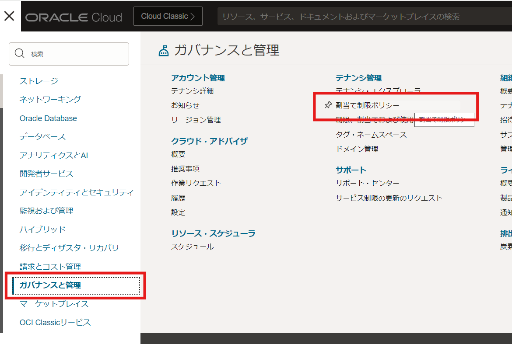 -
割当て制限ポリシーのページで、
割当て制限の作成をクリックします。 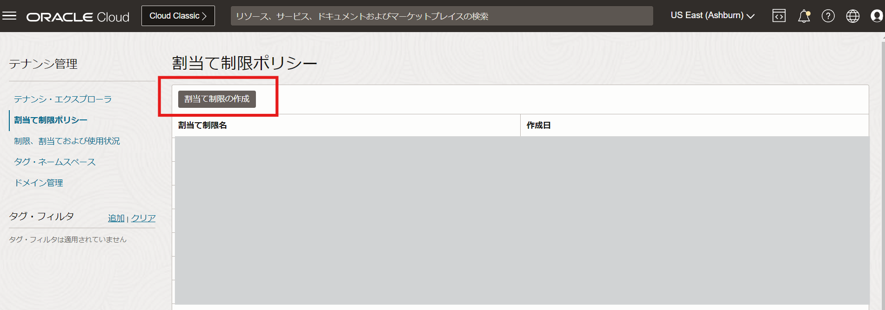 -
割当て制限ポリシーの作成画面で以下の項目を入力し、
割り当て制限ポリシーの作成をクリックします。一つ目のポリシーで、まず全てのシェイプのコンピュートのコア数の割当てを削除してから、二つ目のポリシーで各シェイプごとの使用可能なコア数を2つまでに制限します。割当て制限ポリシーは複数のポリシー文を記載する場合上から順に評価されます。-
名前：任意の名前 -
説明：任意の説明 -
割当て制限ポリシー：以下の2つのポリシー文を順番に入力する。-
zero compute-core quotas in compartment <コンパートメント名> -
set compute-core quota /*-core-count*/, /*-core-ad-count*/ to 2 in compartment <コンパートメント名>
-
-
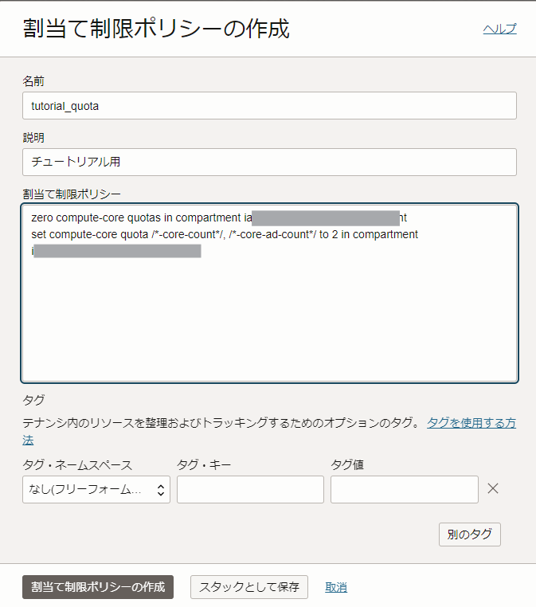
-
-
割当て制限が作成できました。 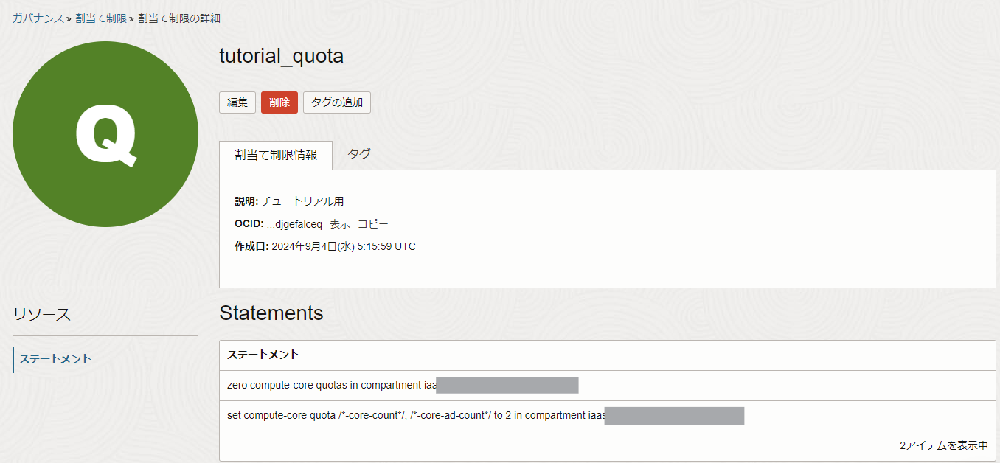
-
メニュー
ガバナンスと管理→制限、割当ておよび使用状況をクリックし、制限、割当ておよび使用状況のページを開きます。以下のフィルタを選択します。サービス：Computeを選択スコープ：文字列:<リージョン名>-AD-1を選択。以下の例の場合は「BUkv:AP-TOKYO-1-AD-1」リソース：Cores for Standard.E4.Flex and BM.Standard.E4.128 instancesを選択コンパートメント：割当て制限で指定したコンパートメントを選択
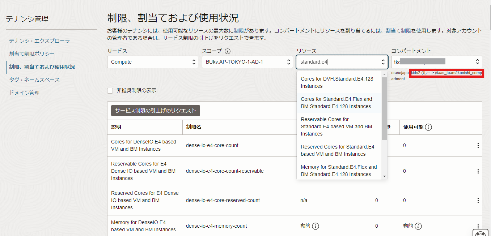
-
「使用可能」 の欄が 2 になっていることがわかります。つまり、このコンパートメントではStandard.E4のOCPU数としては 2 まで使用可能という割当て制限が設定されていることがわかります。 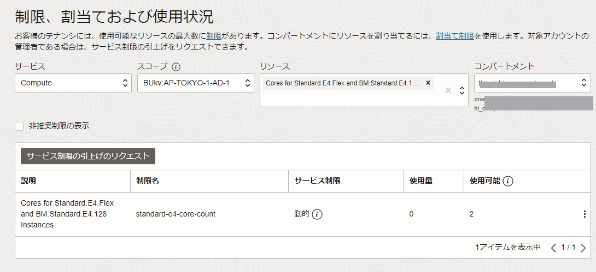
-
コンピュート・インスタンスを実際に作成してみます。メニュー
コンピュート→インスタンスをクリックします。インスタンスの作成ボタンからインスタンスを作成します。コンピュート・インスタンス作成の方法は チュートリアル入門編（その3） - インスタンスを作成する を参考にしてください。- シェイプの選択で
VM.Standard.E4.Flexを1 OCPUで作成してください。（そのほかの設定、イメージやVCNなどはなんでも構いません。） 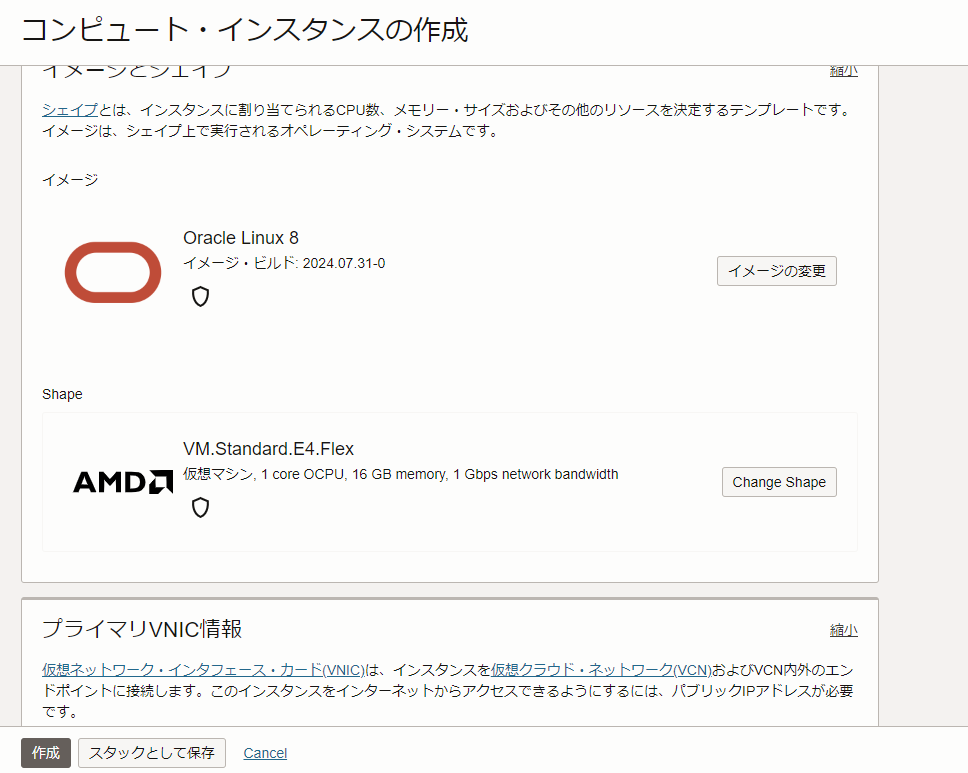
- シェイプの選択で
-
インスタンスのステータスが
プロビジョニング中から実行中に変わり、インスタンスが正常に作成できたことを確認します。１OCPUであれば割当て制限の範囲内なので問題なく作成ができることが分かります。 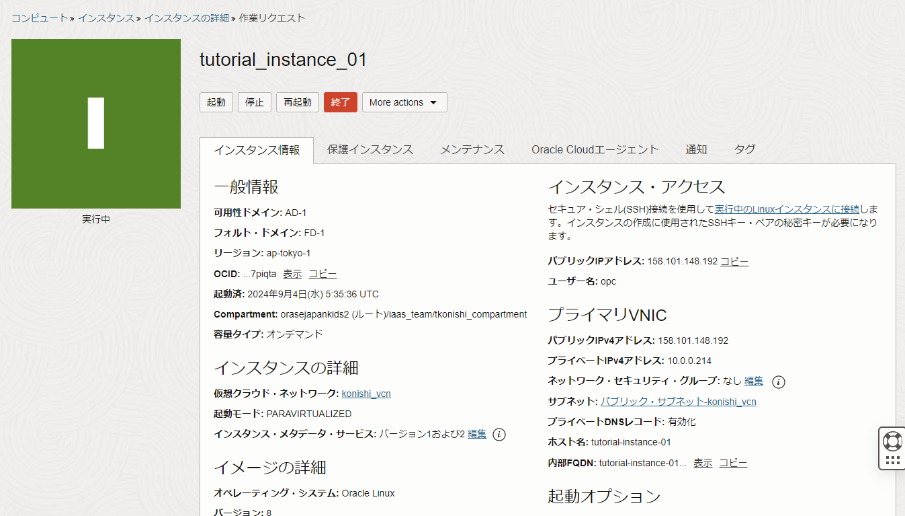 -
続いて、先ほどと同様にもう一つインスタンスを作成してみます。今度は、2 OCPU のインスタンスを作成してみます。つまり合計 3 OCPUとなるので、割当て制限で設定された値を超えることになります。
- シェイプの選択で
VM.Standard.E4.Flexを2 OCPUを選択してインスタンスを作成してください。（そのほかの設定、イメージやVCNなどはなんでも構いません。） 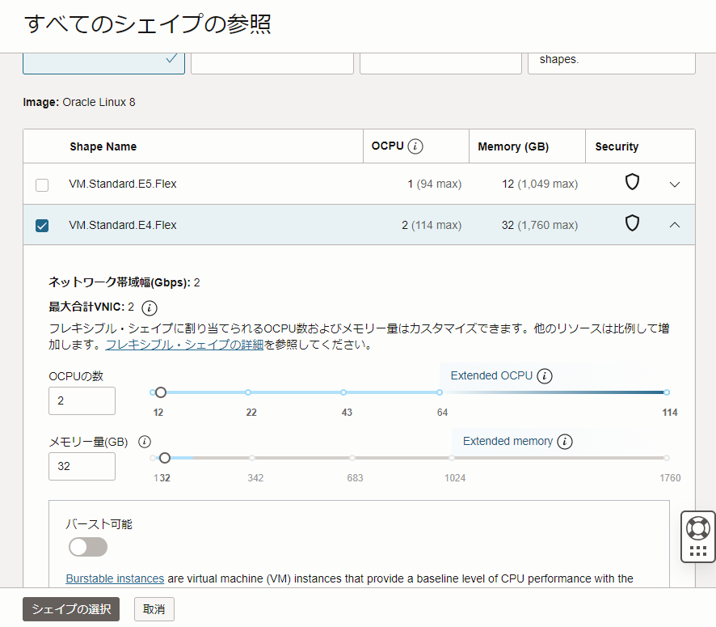
- シェイプの選択で
-
作成ボタンをクリックするとこのようなエラーが表示され、コンパートメント割当てを超えるためにインスタンスが作成できないことがわかります。 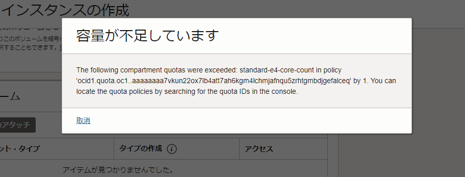
以上で、このチュートリアルは終わりです。
これらの機能を活用して、適切にコスト管理を行っていきましょう。